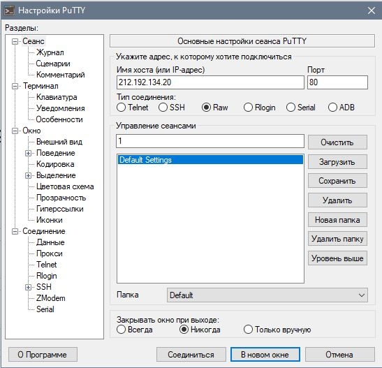
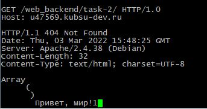
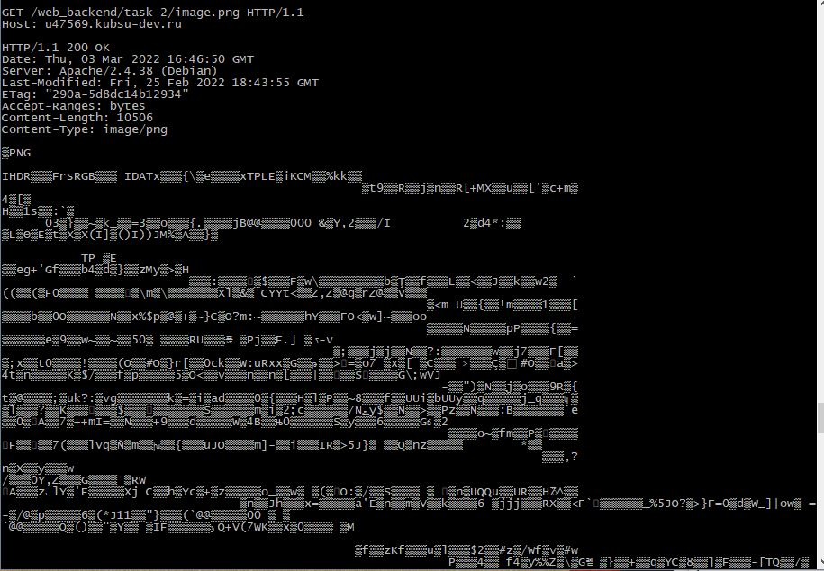
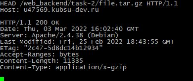
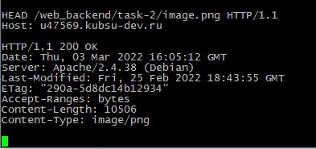
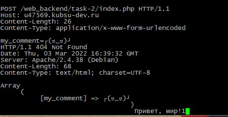
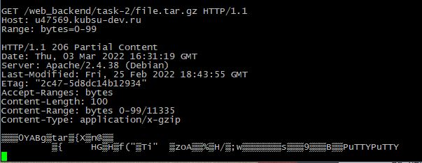
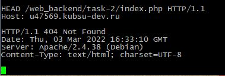

Подключение к учебному серверус помощью клиента Putty

Содержание index.php
Получение главной страницы методом GET в протоколе HTTP 1.0
GET — метод для чтения данных с сайта. Например, для доступа к указанной странице.
Он говорит серверу, что клиент хочет прочитать указанный документ.

Подключение к внутренней странице image.png методом GET в протоколе HTTP 1.1

Определение размера файла file.tar.gz, не скачивая его
Если сервер выдаёт таккую информацию - то она есть в HTTP-заголовках, а именно в заголовке Content-Length.
Чтобы получить набор HTTP-заголовков, не нужно делать запрос GET (он приведет к скачиванию файла). Достаточно сделать запрос HEAD.

Определение медиатипа ресурса image.png
Медиа тип (так же известный как Multipurpose Internet Mail Extensions или MIME тип) является стандартом, который описывает природу и формат документа, файла или набора байтов.

Отправка комментария на сервер по адресу /index.php
HTTP-метод POST предназначен для отправки данных на сервер. Тип тела запроса указывается в заголовке Content-Type
Для HTTP запроса типа POST существует два варианта передачи полей из HTML форм, а именно, используя алгоритм application/x-www-form-urlencoded и multipart/form-data.
Алгоритм первого типа создавался давным-давно, когда в языке HTML еще не предусматривали возможность передачи файлов через HTML формы.
Главное отличие multipart/form-data от application/x-www-form-urlencoded в том, что тело запроса теперь можно поделить на разделы, которые разделяются границами.
Каждый раздел может иметь свой собственный заголовок для описания данных, которые в нем хранятся, т.е. в одном запросе можно передавать данные различных типов (как в теле письма можно одновременно с текстом передавать файлы).

Получение первых 100 байт файла file.tar.gz
Заголовок запроса Range указывает серверу какую часть документа ему необходимо вернуть. Несколько частей документа может быть запрошено с помощью заголовка Range за один раз,
и сервер может вернуть все эти части через многокомпонентный документ. При отправке данных отдельными частями, сервер использует код ответа 206 Partial Content.
Если запрашиваемые диапазоны данных не верны, сервер возвращает ошибку 416 Range Not Satisfiable.

Определение кодировки ресурса index.php
Метод HEAD аналогичен методу GET, за исключением того, что сервер ничего не посылает в информационной части ответа. Метод HEAD запрашивает только информацию заголовка о файле или ресурсе.
